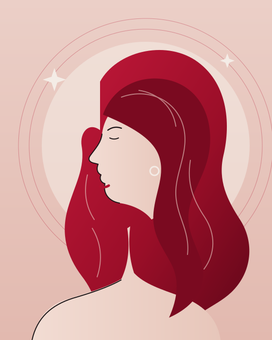
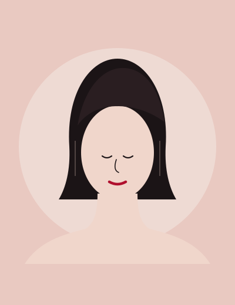
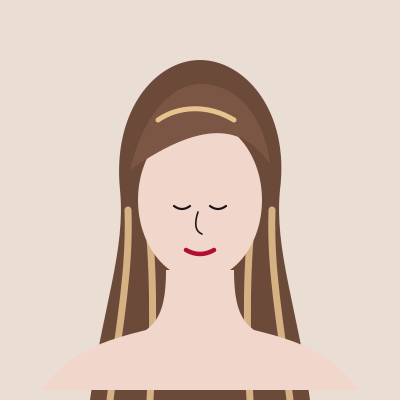
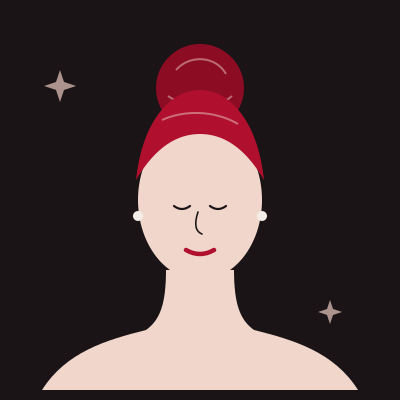
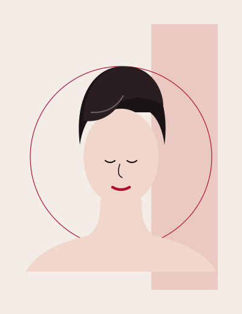
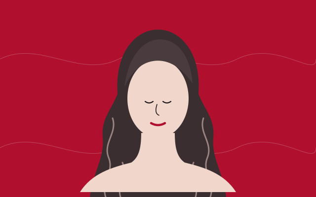
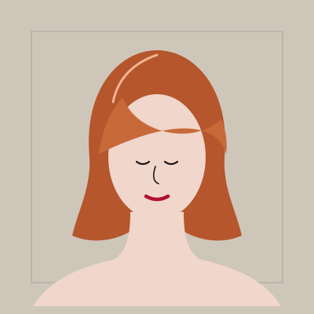
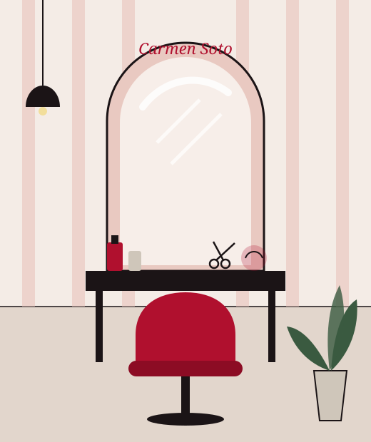

Carmen Soto Peluquería & Estilismo

- 01 Cortes que se peinan solos en casa
- 02 Color pensado para tu piel y tu ritmo
- 03 Peinados y recogidos para tu evento
Índice
Lo que hacemos en el salón
Cada servicio empieza igual: mirando tu pelo, escuchando lo que buscas y proponiéndote algo que puedas mantener. Pregúntanos por cualquiera de ellos.
-
02
Pedir →
Corte y forma
Cortes de mujer, puntas, flequillos y cambios de look. Forma que respeta cómo cae tu pelo.
-
04
Pedir →
Color
Tinte, cobertura de canas, matices y cambios de color con diagnóstico previo.
-
06
Pedir →
Mechas e iluminación
Mechas, babylights y efectos de luz para dar movimiento sin perder naturalidad.
-
08
Pedir →
Tratamientos capilares
Hidratación, reparación y brillo para pelo castigado por el sol, el calor o el color.
-
10
Pedir →
Peinados y recogidos
Ondas, brushing y recogidos para bodas, comuniones, ferias y cualquier ocasión especial.
-
12
Pedir →
Estilismo y asesoría
Te ayudamos a elegir corte y color según tu rostro, tu estilo y el tiempo que quieres dedicarle.
El reportaje
El estilismo empieza antes de las tijeras
Un buen resultado no es solo técnica. Es entender cómo te peinas por la mañana, cuánto tiempo tienes y qué te hace sentir tú. Por eso cada cita empieza con una conversación.
- MiramosTu pelo, su textura, su historia de color.
- EscuchamosLo que te gusta, lo que no, y tu día a día.
- ProponemosUna idea clara, con lo que necesita de mantenimiento.
- Te lo enseñamosPara que el peinado te dure también en casa.
Test de estilo · 30 segundos
¿Qué te apetece?
Elige una opción en cada fila y te diremos por dónde empezar.
Contárselo a CarmenLookbook
Ideas para tu próximo look
Ilustraciones de referencia. En la web definitiva irían las fotos reales de los trabajos del salón.







Carta de la editora
Un salón de Gines, con mirada de estilista
En Carmen Soto Peluquería & Estilismo te atendemos en Gines con calma y con el trato cercano de siempre. Aquí vienes a cortarte las puntas o a prepararte para el día más importante del año, y en los dos casos te vas sabiendo qué te hemos hecho y cómo cuidarlo.
Nos gusta el pelo que se mueve, el color que favorece y los peinados que aguantan la fiesta entera.
Carmen Soto
- GinesAljarafe, Sevilla
- Con citaPor WhatsApp o teléfono
- Para tiDía a día y eventos
Cartas de las lectoras
Lo que dicen al salir del salón
«Le dije lo que quería a medias y entendió perfectamente lo que buscaba. El corte me dura semanas igual de bien.»
«Me peinó para la boda de mi hermana y el recogido aguantó hasta las tantas. Encantada.»
«Trato cercano, sin prisas y siempre te explica qué te va a hacer. Ya no me voy a otro sitio.»
Aquí se mostrarían las reseñas reales de Google o Facebook del salón.
Reserva
Pide tu cita en un mensaje
Elige el servicio y cuándo te viene bien. Te preparamos el mensaje y lo envías por WhatsApp; te confirmamos la hora lo antes posible.
Ubicación
Te esperamos en Gines
En pleno Aljarafe, a un paso de Sevilla, Bormujos, Espartinas y Valencina.
- Salón
- Carmen Soto Peluquería & Estilismo
- Localidad
- Gines, Sevilla
- Citas
- Por WhatsApp o llamada